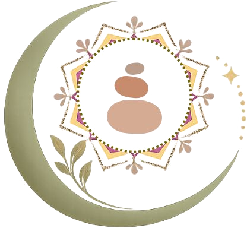
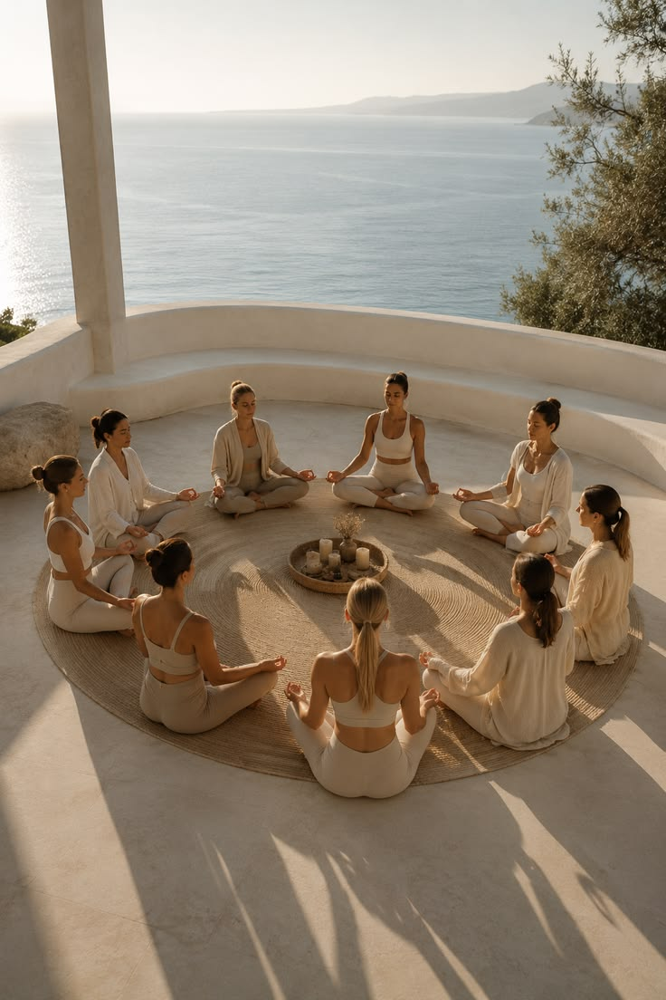
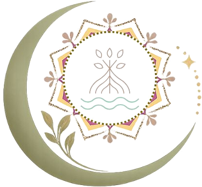
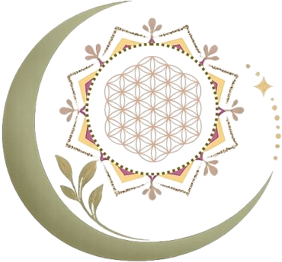
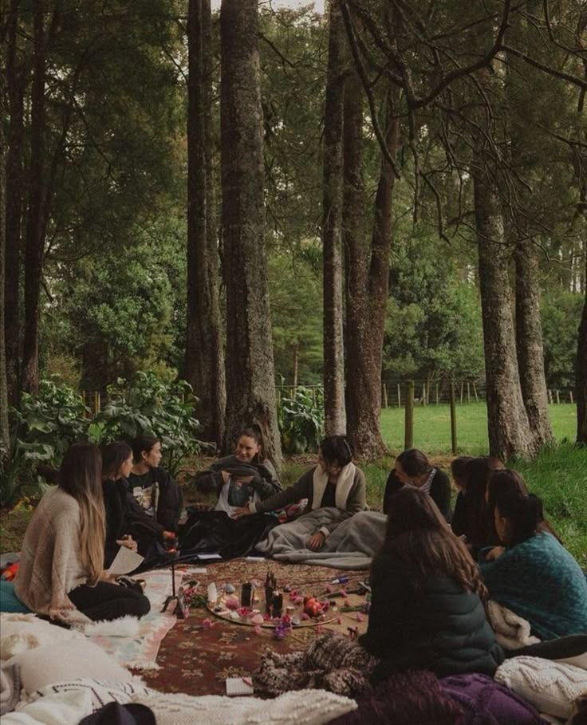

Retiros
Haz una pausa. Respira. Reconecta.
Experiencias diseñadas para salir de la rutina, conectar con la naturaleza, compartir en comunidad y regalarte un tiempo para ti.
Descubrir retiros →Neurobienestar · Energía · Transformación
Retiros, programas y procesos de bienestar para hacer una pausa, reconectar contigo y abrirte a nuevas posibilidades.

Casa Eywa · un espacio para volver a ti
Somos Casa Eywa
Vivimos resolviendo, cuidando, trabajando, avanzando. Y, en medio de todo, es fácil dejar para después algo esencial: a ti misma.
Casa Eywa nace para crear espacios donde puedas detenerte, escucharte y reconectar con lo que verdaderamente importa.
Aquí encontrarás experiencias que combinan bienestar, conocimiento, espiritualidad consciente y conexión humana para acompañarte en diferentes momentos de tu vida.
Quiero conocer másNo tienes que llegar con todo resuelto.
Solo necesitas darte permiso para comenzar.
¿Qué necesitas hoy?
Tal vez necesitas desconectarte de la rutina. Tal vez quieres viajar, descubrir un lugar nuevo o compartir una experiencia especial. Tal vez estás atravesando un momento de cambio y quieres acompañamiento. Hay diferentes maneras de comenzar.

Retiros
Experiencias diseñadas para salir de la rutina, conectar con la naturaleza, compartir en comunidad y regalarte un tiempo para ti.
Descubrir retiros →
Viajes & experiencias
Viajes que combinan exploración, bienestar y experiencias significativas para descubrir nuevos paisajes… y quizás también nuevas partes de ti.
Explorar viajes →
Programas
Procesos acompañados en grupo para trabajar en aquello que hoy quieres comprender, transformar o fortalecer en tu vida.
Conocer programas →No existe un único camino hacia el bienestar.
Existe el que tiene sentido para ti hoy.
Retiros destacados
Nuestros retiros son invitaciones a salir por unos días del ritmo cotidiano y entrar en un espacio diferente: naturaleza, bienestar, conexión, conversaciones, movimiento, silencio, descubrimiento, tiempo para ti — vividos en comunidad. Cada retiro tiene su propia esencia, destino y propósito.
Programas
Hay momentos para hacer una pausa. Y momentos para comenzar un proceso. Encuentra el que conversa con tu momento actual — vivido junto a otras mujeres que están en un camino parecido.
Comenzar de nuevo
Para cuando sabes que algo necesita cambiar y quieres comenzar una nueva etapa.
Conocer Renacer →Volver a cuidarte
Un proceso integral para volver a priorizarte, recuperar hábitos de bienestar y crear nuevas formas de cuidarte.
Conocer el programa →
Transformar tus relaciones
Para quienes desean construir relaciones más conscientes, comprender sus dinámicas y aprender nuevas formas de encontrarse.
Conocer el programa →Profundizar en ti
Un camino de formación, autoconocimiento y expansión para profundizar en tu propio proceso.
Conocer el programa →Destinos
Conocer un lugar nuevo también puede ser parte del proceso.
Este espacio está en construcción.
Estamos diseñando con cuidado nuestros primeros viajes y experiencias. Viajes & Experiencias abrirá sus puertas en 2027.
Quiero que me avisenGalería
Imágenes que reflejan la energía, la calidez y la intención con la que creamos cada experiencia en Casa Eywa.
Momentos reales de ceremonias y retiros Casa Eywa.
Testimonios
Cada experiencia es diferente. Cada mujer llega con una historia. Y cada proceso deja algo distinto.
"A saber que yo soy lo más importante en la vida, que debía cuidarme y era mi obligación protegerme."
Camila, 46 años · Proceso de acompañamiento
"Desde que visité Casa Eywa mi vida cambió completamente. Pude tener más dominio de mis emociones y sentirme bien."
Ma José, 24 años · Proceso de acompañamiento
"Más que una ceremonia, es una experiencia que toca el alma y puede marcar un antes y un después en la relación."
Julieth · Ceremonia de boda espiritual
"Con Ángela como instrumento de Dios, vivimos un momento que nos permitió establecer un vínculo espiritual y poner nuestro matrimonio bajo Su bendición."
René · Ceremonia de boda espiritual
"Angelita es una guía maravillosa que, con sus palabras, te ayuda a avanzar con éxito en este proceso."
Clau, 34 años · Proceso de acompañamiento
¿Te imaginas viviendo tu propia experiencia?
Quiero conocer Casa EywaQuizás este sea tu momento.
De hacer una pausa. De salir de la rutina. De regalarte una experiencia. No tienes que saber exactamente por dónde empezar — estamos aquí para acompañarte a encontrar tu camino.